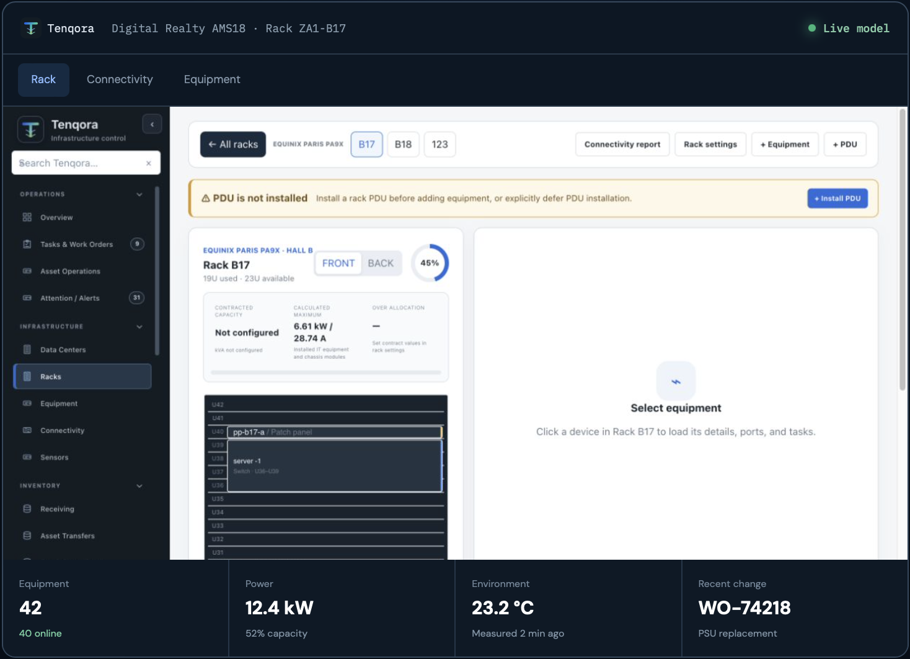

Model reality
Sites, rooms, racks, devices, modules, ports, cables, feeds and sensors.
Operations-first infrastructure management
Manage racks, assets, connectivity, power and telemetry from one operational system of record.

Built for physical infrastructure work
Tenqora combines the physical discipline of DCIM with the accountability of asset management and the context of optional monitoring.
Sites, rooms, racks, devices, modules, ports, cables, feeds and sensors.
Compatibility, capacity and placement rules before work reaches the rack.
Tasks, approvals, labels, audit history and lifecycle events stay linked.
Separate clients, sites, roles, feature entitlements and operational boundaries.
Trace compatible media, splitters, patch panels, power and network cross-connects from exact Port to exact Port.
Explore ConnectivityTrack catalog identity, receipt, warehouse, installation, maintenance, ownership, warranty and disposition.
Explore Asset ManagementCollect SNMP, Redfish, agent, PDU and environmental telemetry without confusing measured data with inventory truth.
Explore MonitoringManage IP roles, Agent, VPN, direct and vendor-cloud paths without confusing configuration with observed reachability.
Explore Network ManagementUse multiple function-scoped Telegram Agents for Tasks, operations, support, security and Change Log delivery.
Explore Telegram ManagerBuild evidence-backed discovery, dependency context, capacity scenarios and controlled remediation on the same physical model.
Explore Operations IntelligenceExplore Tenqora